j2js space program
Enno BolandAgenda
- Einführung
- Architektur
- Demo
- Ausblick
Einführung
Java
- breites Anwendungsfeld
- verbreitet
- stark typisierte Sprache
- funktioniert nicht (mehr) im Browser
- schlecht für Prototyping
komplexer Anwendungen
JavaScript
- breites Anwendungsfeld
- verbreitet
- gutes Tooling
- schnelle Entwicklung von Prototypen
- skaliert schlecht
- kein Typensystem
- [] == "" => true
JAVA
JavaScript
⇝
j2js
Architektur
Architektur
 



Parser
Generator
Transpiler
Parser
Überführt den Quelltext in einen abstrakten Syntaxbaum (AST)
- ANTLR4
- Java7 Grammatik
Transpiler
Transformiert den den Java AST in einen JavaScript AST
- Visitor Pattern
Generator
Erzeugt aus dem JavaScript AST eine Sourcecoderepräsentation
- generisch
- escodegen
Demo
Ausblick
Ausblick
- Kompletes Metamodel des Klassenbaumes
- On the fly Refactorings
- Java Implementation
- sich selbst nach JavaScript übersetzen